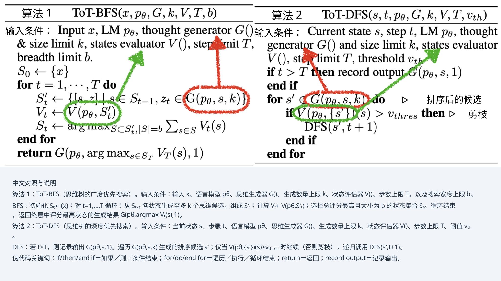
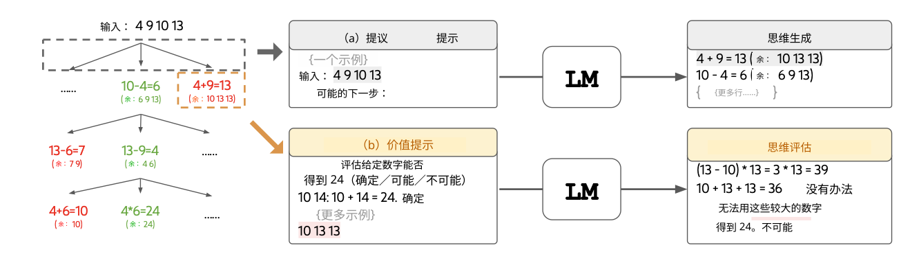
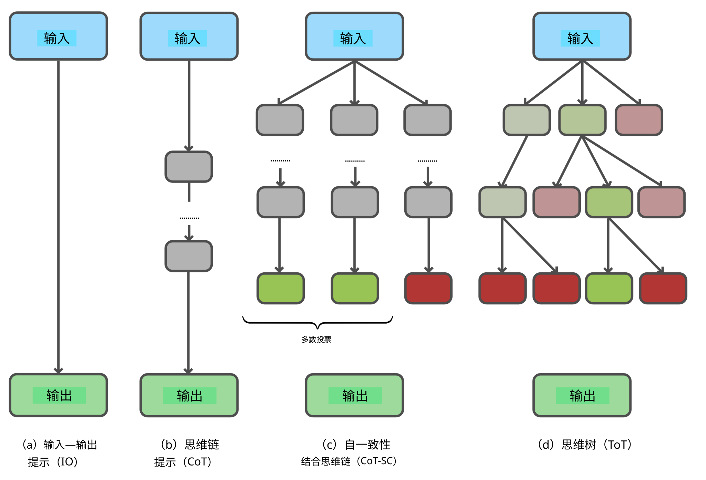
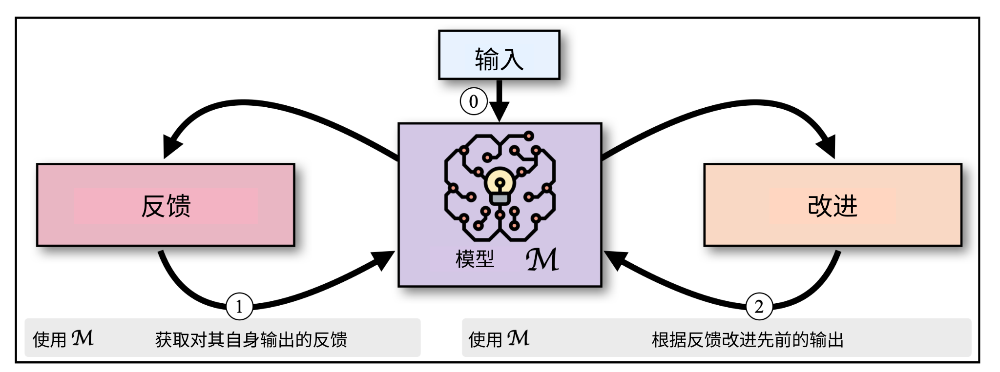
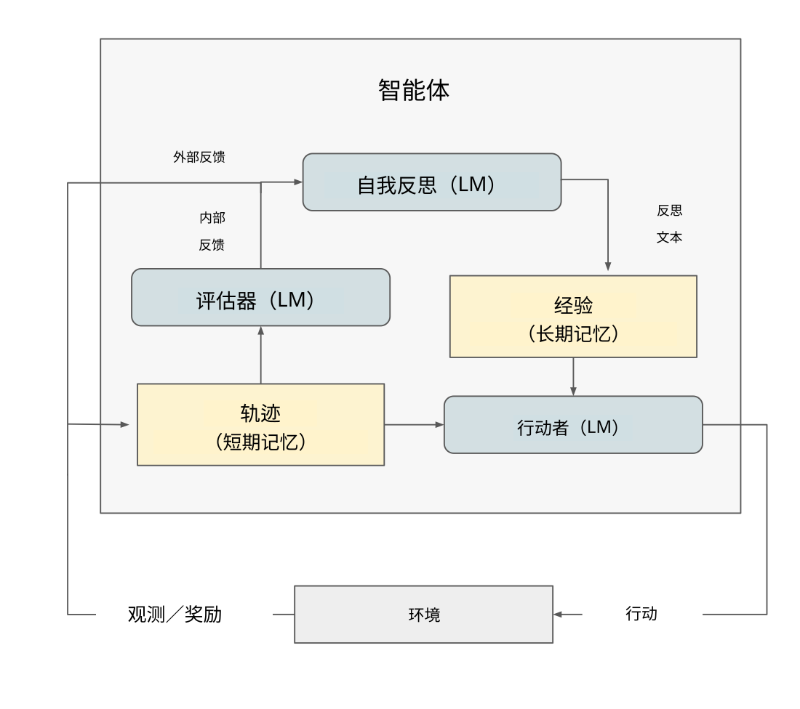
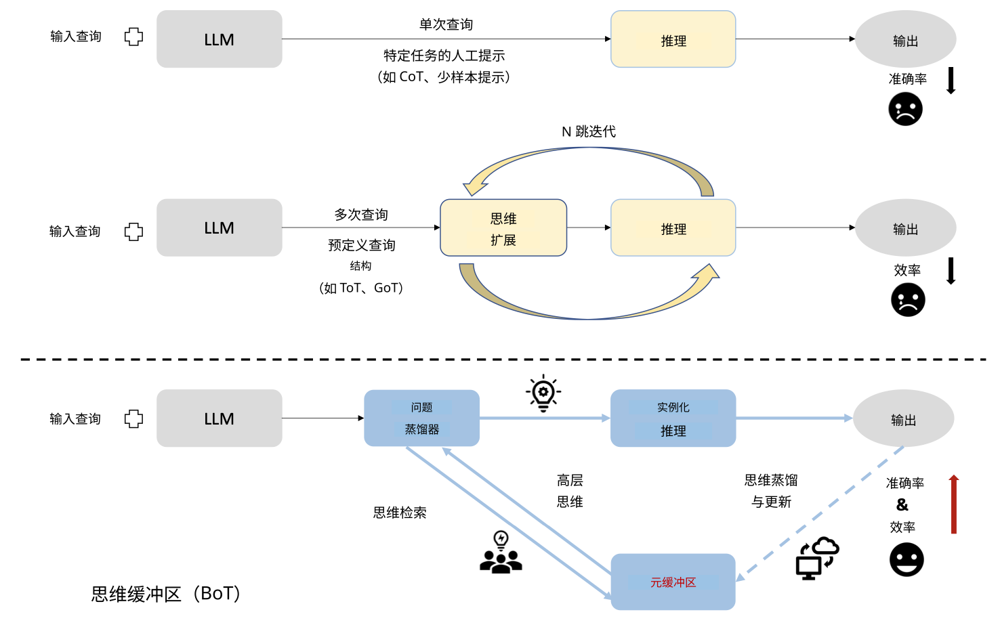

06 / 23 · 中文翻译
第 6 章 大语言模型中的多步推理
本章目录
6.1 上下文推理
正如第 3 章指出，当模型超过数千亿参数时，大语言模型中涌现出一种新的学习形式，称为上下文学习（ICL）或提示学习 [Brown et al., 2020]。这是一种重要的学习方法，本节将更详细讨论。随后，我们将介绍常见基准，以及用于多步推理的思维链方法。
6.1.1 上下文学习
上下文学习 [Dong et al., 2022] 并非发生在训练阶段，而是在使用模型回答问题的推理阶段，从大语言模型提示中提供的示例学习。这些示例促使解码器模型访问存储在大语言模型中的相关知识。凭借丰富知识，上下文学习仅用少量示例就能获得准确结果，因此被称为少样本学习方法。模型规模庞大，包含众多主题的丰富多样知识，使少样本学习成为可能。
是学习，而不是训练
上下文学习与微调或预训练的主要区别之一，是它不改变 Transformer 的参数。推理阶段没有模型参数变化，因此它不是参数训练方法；然而，它确实从提供的示例中学习答案，所以属于学习方法。由此带来的一项缺点是遗忘性：模型参数保持不变，所有学到的信息会在大语言模型调用之间丢失。为了在调用之间共享信息，必须将先前结果作为额外学习示例，加入下次调用的提示，即上下文窗口。
上下文窗口
上下文学习如何工作？大语言模型中写入提示的部分，称为上下文窗口。解码器模型在这个窗口内，从提示提供的示例中学习。需要注意，学习答案所用的全部示例，必须一起出现在上下文窗口中，也就是必须装入提示。上下文窗口通常限制在几千个词元，只能提供少量示例，因此 ICL 能执行的只是少样本学习。当我们希望从中学习的信息量增加时，这便成为问题，因为上下文窗口的大小通常有限。可以说，上下文学习患有长期记忆丧失。
示例
在上下文学习中，由少量演示上下文组成的提示，与查询问题拼接后，输入语言模型的上下文窗口 [Liu et al., 2023]。随后，模型通过一次前向传播生成答案。例如，当任务是识别社交媒体帖子中的情绪时，可以在“我今天错过了公交车”后接上“我觉得很 [___]”，模型可能回答“糟糕”。或者，对于翻译任务，可以在“I missed the bus today”后接“French: [___]”，请求翻译。提示包含模型能够识别的背景信息，从而选择期望的模型上下文。
少样本学习与机器学习的圣杯
当语言模型包含足够知识，能够根据提示中的少量示例泛化时，上下文学习就会起作用。用户在提示中提供少量相关示例，引导大语言模型选取正确背景知识，回答提示中的指令。包含少量示例的上下文，被称为执行少样本学习。只有指令、没有示例的上下文，则被称为执行零样本学习。
ICL 是一种少样本学习，曾让研究者十分兴奋。传统机器学习在数据集上训练模型 。要在复杂问题上达到高准确率，数据集必须包含大量示例。传统机器学习是一种多样本学习，需要很多昂贵的训练轮次来训练模型参数。相比之下，上下文学习成本低，只需要几个示例，再通过解码器模型进行一次前向传播，因为昂贵训练已经在预训练阶段完成。少样本学习堪称机器学习的圣杯：能够低成本泛化的模型。
实践考量与提示工程
上下文学习还有便利这一实践优势：我们可以在智能手机上，对商业云端运行的大语言模型执行 ICL，而无需费力寻找能够训练大型模型的计算机。
尽管提示为大语言模型提供了用户友好界面，上下文学习能否成功，往往对提示措辞方式或所提供的不同示例相当敏感。提示学习十分脆弱，因此出现了名为提示工程的新领域，帮助人类用户学会让大语言模型按我们的意愿行事 [Radford et al., 2019, Wei et al., 2022a, Giray, 2023, Sahoo et al., 2024]。
多数大语言模型的上下文窗口中，都会提供隐藏提示，即系统提示，用于指定模型角色、防止使用脏话；在聊天机器人中，还会加入简短的先前搜索结果历史，使对话更自然流畅。
上下文学习催生了大量后续研究，其中一个领域就是本章主题：多步推理。推理曾是大语言模型表现不佳的领域，例如模型会在简单数学练习上失败。为更好地理解这一应用领域，我们先介绍若干推理基准，再讨论一种大幅提升大语言模型推理表现的上下文学习方法。
6.1.2 多步推理基准
人工智能进步通过基准衡量。使用大语言模型进行多步推理的研究，始于简单的小学数学应用题。GSM8K 基准专门为研究这种简单推理而构建 [Cobbe et al., 2021]，旨在提供高质量、多样性强、难度适中的自然语言问题。它包含 8500 道人工编写的数学题与解答。在思维链引入之前，语言模型在这一数据集上难以取得良好表现，见下一节。下面是典型数学应用题的例子：
问题：Romeo 一周烤了 4 盘饼干，每盘两打。如果将这些饼干平均分给 16 个人，每人吃到多少块饼干？答案：。
尽管 GSM8K 在我们看来可能很容易，对大语言模型却很困难。它刚提出时，最先进的大语言模型 GPT-3-175B，准确率仅约 15% [Wei et al., 2022b]。其他类似数学应用题基准包括结构多变的 SVAMP 基准 [Patel et al., 2021]、包含多样数学问题的 ASDiv 数据集 [Miao et al., 2021]、代数应用题 AQuA 数据集 [Ling et al., 2017]，以及 MAWPS 基准 [Koncel-Kedziorski et al., 2016]。
后来，其他任务的基准也被提出，用于评估大语言模型在其他推理领域的能力。例如，已有基准涵盖高级数学问题（AIME [Codeforces, 2024]）、计算机代码理解（Spider [Yu et al., 2018]、转码，即将一种计算机语言的程序翻译成另一种 [Roziere et al., 2020]）、机器人移动（Alfworld [Shridhar et al., 2020]、厨房任务 [Ahn et al., 2022]）、解谜（Game24 [Yao et al., 2024]）、创意写作 [Yao et al., 2024]、棋盘游戏（将死问题 [Yang et al., 2024]、MineCraft [Fan et al., 2022]），以及网页导航（WebShop [Yao et al., 2022a]）。其他相关基准研究也聚焦游戏和规划问题 [Ruoss et al., 2024, Paglieri et al., 2025, Wen et al., 2025a]。
基准旨在清晰比较不同方法的性能。然而，不同实验的实施方式可能不同，因此直接比较不同基准结果并不容易。关于大语言模型推理基准挑战的批判性讨论，参见 Kamoi et al. [2024], Shojaee et al. [2025]。
6.1.3 思维链提示
2022 年前后，当时普通大语言模型在简单数学应用题上表现不佳。有趣的是，第 4 章介绍的通过扩大模型规模改善性能的标准方法，并没有解决这一问题 [Rae et al., 2021]。问题似乎在某种程度上具有根本性，研究者因此开始寻找不同方法。
大语言模型架构是基于 Transformer 的解码器。给定某个输入，它被设计为产生单个词元。大语言模型是下一个词元预测器。当我们提示这种解码器给出答案时，它会按指令快速给出一个答案——任何答案。但人类解决数学推理问题时，并不是这样得到答案，而是将问题分解成一系列待解决步骤（）。因此，对大语言模型应采取的做法，是提示它遵循精心选择的中间步骤序列，逐一回答，最终得到答案；就像教育学生将复杂问题分成小步骤，并在学校答题时提供推理过程——不要只告诉我答案，也告诉我是怎么得到答案的。儿童在学校学习解决数学问题时，要将大问题分解为一系列小步骤。同样，我们应引导语言模型显式产生这些中间步骤，再合并结果。模型随后应给出包含中间步骤的答案，得到正确结果。
因此，少样本提示应包含中间推理步骤的示例，而不只是最终答案的示例。Wei et al. [2022b] 等研究了这一问题，提出思维链方法。图 6.1 展示了其工作方式，以及受它启发的相关方法。
指导大语言模型生成中间步骤的方法，是手工编写包含解答任务所需具体推理步骤的提示，例如计算容器中有多少球，或者馅饼被切成多少块。事实上，Wei et al. [2022b] 尝试这种方法，提示模型在答案中将题目信息重新表述为中间推理步骤时，模型表现远优于被要求仅给出单个答案时。思维链论文的例子见图 6.1。展示较长的示例提示后，模型在回答问题时会遵循该较长示例，即少样本思维链。在 GSM8K 上，思维链方法使准确率从 16% 大幅提高至 47%。
通过提示让大语言模型遵循逐步指令这一想法，激起了广泛兴趣，开启了更多大语言模型多步推理研究。此后，思维链（CoT）成为大语言模型的标准提示方法。
原始论文中，研究者为不同问题类型手工编写提示。Kojima et al. [2022] 更进一步，表明只需加入一句与任务无关的话“让我们一步一步地思考”，也能显著改善许多问题的表现。由于这段文本不包含与问题相关的要素，因此属于零样本学习。图 6.1 比较了这些方法，见第二和第三列。实验还表明，这种添加在其他推理基准上同样带来显著提升，包括算术、符号和逻辑推理；使用较新的 PaLM 大语言模型，并加入下一节所述的自一致性后，在 GSM8K 上达到 70% 准确率 [Wang et al., 2022]。
思维链思想本身受到 Scratchpad [Nye et al., 2021]、更早利用自然语言步骤进行算术推理的工作 [Ling et al., 2017, Cobbe et al., 2021]，以及使用形式语言推理的工作 [Roy and Roth, 2016, Chiang and Chen, 2018, Amini et al., 2019, Chen et al., 2019] 启发。
6.1.3.1 自我评估
大语言模型并不完美，结果会出现错误。生成多个推理步骤时，错误会累积。为防止错误失控，应格外关注结果评估。下面回顾通过检查模型或评估中间推理步骤，来减少错误累积的方法。
提示大语言模型执行思维链推理时，它会产生一系列步骤。多步执行使模型容易犯错，也容易发生错误累积 [Weng et al., 2022, Xiao et al., 2023]。已有若干防止错误累积的方法。一种做法是创建新模型，单独评估结果。Weng et al. [2022] 提出由同一个大语言模型评估的自动方法，称为自验证。提示模型将思维链推理的结论作为解决原问题的条件，再回到原问题比较答案。系统向模型提供其自身结论的不同变体，要求选择与原问题相似度最高的一个。
一种流行的相关方法是自一致性 [Wang et al., 2022]。自一致性属于集成方法，这是一种广为人知的机器学习技术，通过运行多个较弱学习器，构建强学习器 [Sagi and Rokach, 2018, Breiman, 2001]。通常，大语言模型查询的答案通过贪心地沿最高 logit 值路径，从解码器网络中提取。自一致性用更广泛路径样本上的多数投票，代替贪心单路径解码。通过采样多样推理路径、评估它们，并选出其中最一致的答案，自一致性实际上要求大语言模型多次执行相同查询，并对 Transformer 内部解码路径进行多数投票。它之所以有效，是因为复杂推理问题通常有多条不同推理路径通向正确答案。图 6.2 给出了这一方法的例子。
自一致性已在算术推理、常识推理和符号推理中，使用包括 GPT-3 在内的多种大语言模型评估。它通常在思维链基础上，进一步提高 10 至 20 个百分点。现代大语言模型常将自一致性与思维链结合使用。
6.1.3.2 生成代码以验证
提高推理步骤序列准确性的另一种方法，是从自然语言切换为形式语言。形式语言的优点是歧义少于自然语言，例如 Python 等计算机语言，或数理逻辑。
大语言模型根据自然语言提示生成计算机代码，已相当成功。Chen et al. [2021] 提出 Codex，这是在 GitHub 上公开代码中训练的 GPT 模型。Codex 能根据注释字符串等自然语言描述，生成正确程序。此后，使用形式语言进行推理成为流行方法。许多方法用 Python 生成推理步骤，使代码可由编译器、调试器或解释器评估。人类程序员写代码时，通常遵循一个循环：编写部分代码、编译并执行以寻找错误，再用反馈改进代码。例如，自调试采用了这一方法 [Chen et al., 2023]，同样遵循代码生成、代码执行和代码解释步骤。自调试通过检查执行结果，识别自身代码中的错误，还能用自然语言解释所生成的代码。
另一种方法是程序辅助语言 [Gao et al., 2023]，利用大语言模型生成 Python，再用解释器评估结果。这种方法将问题翻译成小段 Python 代码，然后由解释器执行以解决问题。图 6.1 的第四列展示了程序辅助语言方法。将推理步骤的评估交给 Python 解释器后，大语言模型的唯一任务，就只剩将自然语言问题分解为可执行代码步骤。Gao et al. [2023] 提供了大量实验证据，展示神经大语言模型与符号解释器之间的协同效应。在 13 项数学、符号和算法推理任务上的实验，取得了比当时大得多的模型更准确的结果，例如程序辅助语言报告 GSM8K 准确率为 72%，Penguins 为 93%。
6.1.3.3 演化代码生成提示
基于形式语言验证的研究，催生了若干无需人类反馈，就能自动生成针对特定问题调优的可运行代码的工作。Romera-Paredes et al. [2024] 提出 FunSearch，将形式方法与大语言模型结合，增强数学推理和代码生成。FunSearch 使用遗传方法，维护多个候选解，也就是程序的种群，并根据问题规格，使用相应函数评估。评估起始提示生成的程序后，系统迭代创建新提示：选取采样程序，按评估分数排序并组合，再要求大语言模型生成新程序。另一项工作利用演化计算方法，生成和优化演化算法 [van Stein and Bäck, 2024]。LLaMEA（Large Language Model Evolutionary Algorithm，大语言模型演化算法）利用大语言模型设计和优化演化算法：先生成初始算法结构，再通过变异和选择精化。它报告在黑盒优化基准（BBOB）[Hansen and Ros, 2010] 上，准确率提高了 11 个百分点。
6.2 自我反思与状态
上下文学习已成为一种强大的新型少样本学习方法。当少样本示例规定推理步骤时，我们还可以进一步增强大语言模型能力。
本节考察上下文学习的一些限制，以及扩展这些限制的方法。首先讨论状态和记忆问题，考察如何在大语言模型的独立调用之间传递状态、长上下文窗口，以及大语言模型是否擅长解决必须操作状态的问题。
6.2.1 大语言模型是无记忆函数
上下文少样本学习利用了大语言模型在提示条件下检索知识的能力。给出指令和示例后，Transformer 架构在其庞大的 参数模型中寻找答案，即下一个词元。使用思维链提示时，大语言模型以提示中规定的少样本推理步骤为条件。
上下文学习以函数方式使用大语言模型，所有输入都通过提示提供。模型 为输入提示 寻找答案 ：
原则上，大语言模型不在调用之间保留信息：模型参数不变，也没有带历史的全局变量。如果希望细化请求，将上次调用的状态信息带到下一次，就必须由用户在新提示 中指定全部这些状态。模型本身已经完全忘记先前答案。
对聊天机器人来说，在每个新问题中重复全部对话历史，会是一种繁琐、不自然的交谈方式。人类对话伙伴会记得刚刚说过什么，无需我们明确重复对方上一句话；不过采访政治人物时，记者有时会用这种方式让他们不偏离主题。商业聊天机器人部分通过系统提示解决这一问题，将前一次大语言模型调用的输出，隐式提供给新查询的提示。然而，基本原则不变：大语言模型擅长为提示找到联想式的下一个词元答案，却并不擅长记住答案，以及像通用计算机编程语言那样操作变量状态。由于参数没有变化，大语言模型不会在调用之间记住上下文状态。
6.2.2 检索增强与长上下文窗口
大语言模型的记忆问题更为深层。查询的全部信息都必须放在上下文窗口中，而窗口大小有限，从根本上限制了单次查询能够传达给模型的信息量。当需要总结书籍等长文本时，这一限制就是问题。此外，第 20.2.1 节将讨论通过在上下文窗口保存完整回合历史来工作的上下文强化学习方法。总之，需要向大语言模型传递更多信息的方法。
在推理阶段扩充信息量的最早方法之一，是生成式人工智能的检索增强，即 RAG。RAG 让大语言模型调用企业数据库或维基百科等外部数据 [Lewis et al., 2020]。它也用于减少事实幻觉，并获取金融或物流数据等具有时效性的信息。第 12 章将讨论 RAG。
为向模型传递更长文本，研究者开发了具有更长上下文窗口的大语言模型。标准 Transformer 架构的计算需求随上下文窗口大小呈平方增长，因此线性架构正在发展 [Ren et al., 2024]。另一种解决方案是压缩上下文窗口信息，例如语义压缩 [Fei et al., 2024]、信息分块 [Wang et al., 2023, Zhou et al., 2025] 或递归方法 [Zhang et al., 2025]。为大语言模型设计新型记忆架构，是活跃研究领域 [Yan et al., 2025]。
6.2.3 大语言模型与有状态问题
大语言模型在需要管理状态的问题上表现不佳 [Wong et al., 2025]。例如，规划问题必须准确记住当前状态，即使图 6.3 这样的简单棋盘游戏也是如此。大语言模型往往混淆状态，给出听起来合理的答案；它们可能适用于训练语料中见过的棋局，却不适用于当前实际棋盘状态 [Paglieri et al., 2025, Ruoss et al., 2024]。
研究者尝试了许多方法改善带状态的推理，常受到强化学习和规划算法启发 [Wong et al., 2026]。为理解如何使用大语言模型解决这些有状态问题，我们将讨论其无记忆特性，如何导致所谓知行鸿沟。还有其他高级方法，帮助大语言模型更好地处理有状态问题，第 20 章将介绍。
知行鸿沟
除了调用之间缺少状态，大语言模型内部执行某些任务时，还存在另一项与记忆相关的问题。
这一问题称为知行鸿沟，描述一种奇特现象：大语言模型能够生成解决问题的正确文字描述，甚至正确算法，却无法正确执行该算法 [Paglieri et al., 2025]。询问如何解决某个问题时，它能迅速以可执行 Python 代码提供正确算法。随后要求它真正解决问题时，却不会正确遵循自己刚生成的算法。很多时候，算法中变量状态变化之间就开始出错 [Paglieri et al., 2025, Ruoss et al., 2024]。注意，逐步忠实执行算法代码、跟踪寄存器值，根本不是大语言模型中基于注意力的 Transformer 的设计目标；它们被设计为通过某种联想记忆模拟自然语言处理 [La Malfa et al., 2024]。11 1 还应注意，人类心智有时也有同样问题：我们可以轻易描述长除法算法，但要求计算 时，仍可能犯错——计算机擅长此事，而人类和大语言模型都不擅长。
除了知行鸿沟，还有另一项状态管理问题。提示大语言模型与自己下棋盘游戏的前几步，可能看到棋子在步与步之间神奇地出现或消失。模型无法认识到，自己所走的棋在某些情境下可能很好，却不适合当前棋盘位置，甚至以健谈的对话风格，为错误落子装点听似合理的理由。大语言模型难以可靠管理变量从一个值到另一个值的状态转移。单个值容易遗忘或混淆。可以在提示中加入额外文本，要求模型下一步之前仔细跟踪变量值 [La Malfa et al., 2024]，但这种方案繁琐且容易出错。
知行鸿沟和棋子消失问题，都可通过调用外部解释器执行大语言模型生成的算法来绕过。商业聊天机器人有时采用这一策略。这是一种聪明、实用的方案，因为 Python 解释器不仅能正确执行 Python 代码，而且比大语言模型更高效。
第 20 章将讨论在 Transformer 架构中处理状态和记忆的其他方法。
6.2.4 用于提示改进的智能体 Harness
除在外部执行生成代码外，研究者还开发了其他处理记忆与状态的方法。本节将转向智能体方法，引入小型外部算法，显式管理状态和提示。这种算法称为 Harness（运行支架）。Harness 也可让同一个大语言模型承担不同角色，为各角色提供不同提示，例如用于状态生成或状态评估。我们从基于搜索算法的提示管理开始。
当大语言模型被以不同角色调用，例如批评、评估自己刚生成的表现时，可以说它在进行自我反思。文献常用这一带有拟人化色彩的术语描述这些方法。究竟是什么，而非谁，在执行自我反思——大语言模型还是智能体 Harness——仍有争议。
6.2.4.1 基于搜索的提示优化
下面讨论基于搜索的推理阶段决策方法。这些上下文学习方法超越了思维链。思维链探索单条推理步骤路线，每步仅有一个后继；基于搜索的方法则在每步探索多个选项，形成可能性之树。
要考察可能推理步骤构成的树，就需要一种方法，跟踪已看过哪些步骤、迄今最佳答案是什么，以及哪些步骤仍需进一步检查。如前所述，大语言模型并不擅长跟踪状态，而传统计算机算法，例如小段 Python 代码，则擅长。这样的算法将问题分解为搜索树，生成多个替代步骤，能够向未来搜索多步，见第 6.6 页图 6.6。算法将大语言模型作为子程序调用，提示其执行动作选择和奖励评估等所需任务。随后，算法可以回溯，尝试替代步骤。这一控制算法位于大语言模型之外，包裹模型，跟踪状态、管理提示，将模型与外界隔离，也保护外界免受弄乱状态的大语言模型影响。这一控制算法称为 Harness。
我们从深度优先搜索与广度优先搜索开始讨论控制策略 [Cormen et al., 2022]。思维树 [Yao et al., 2024] 使用广度优先或深度优先搜索，动态沿不同推理步骤前进。22 2 思维树是一种流行方法，Huggingface 链接在此：https://huggingface.co/blog/sadhaklal/tree-of-thoughts。思维树中的生成部分（红色）和评估部分（绿色），都通过提示大语言模型执行，见图 6.4。

两个大语言模型提示与外部控制结合，使推理步骤空间能够被系统探索，执行前瞻与回溯。

思维树（ToT）已用于 24 点等基于规划的谜题。游戏给出 4 个数字，任务是在数字之间使用算术运算符 ，得到 24。例如，对数字 ，一个解为 。思维树首先通过提议提示 Input 4 9 10 13; Possible next steps: 生成局面，模型对此生成可能的下一步思路。随后，模型通过包含思维链示例的评估提示，评估这些思路。图 6.5 展示了原论文中一种可能的提示序列。
作者在 24 点游戏、创意写作和迷你填字游戏中，将该方法与带自一致性的传统线性思维链比较，在 24 点任务中取得 74% 准确率，其他任务则采用定性评估。图 6.6 展示了不同推理结构。33 3 一种名称相似的方法是思维图 [Besta et al., 2024]。思维图允许更一般的推理图，提供形式化框架，再手动指定不同元素。

思维树是一种优雅方法，在大语言模型之上添加两种最简单的搜索结构。提示序列容易理解，查找并纠正错误也很容易。
思维树的两种搜索方法遵循固定扩展策略。接下来讨论更高级的基于学习的方法，它们可能表现更好，但代价是算法复杂度更高。
6.2.4.2 自我反思
研究者设计了许多让大语言模型承担多个角色的方法，通常称为自我反思方法。模型不仅用于评估提示，还用于生成新的推理步骤，并常常进一步精化这些步骤。
自我反思领域尚年轻，新方法不断出现。我们将介绍四种：Self-Refine、ReAct、Reflexion 和 Buffer of Thoughts。这些方法以不同方式使用大语言模型，通过受强化学习启发的方案，让模型自我改进。
Self-Refine
第一种方法是 Self-Refine [Madaan et al., 2023]，旨在根据反馈改进答案。大语言模型生成初始输出，并为自己的答案提供反馈，利用自身进行迭代精化。因此，模型被用于改进自身答案，见图 6.7。

Self-Refine 以三种方式提示大语言模型：（1）初始生成；（2）反馈；（3）精化，遵循贪心推理链。据报告，Self-Refine 在对话回复生成、代码优化和约束生成等基准上，显著优于普通思维链。它遵循线性、贪心的推理链，在一个状态中只尝试单个后继，而不像 ToT 那样探索树。
ReAct
推广贪心方法，可以让大语言模型对每个状态考察多个选项。ReAct 是结合强化学习与大语言模型的一种重要方法 [Yao et al., 2022b]。44 4 https://github.com/ysymyth/ReAct ReAct 将思维链提示学习纳入强化学习框架，并使用外部知识来源，如维基百科，以及微调，以减少错误、实现落地和缓解幻觉。该框架允许手工编写提示。在 Alfworld 和 WebShop 两项交互式决策基准上，ReAct 相比模仿学习与强化学习方法，成功率分别提高 34 和 10 个绝对百分点。
Reflexion
ReAct 的工作得到进一步发展。Reflexion [Shinn et al., 2024] 受人类反思失败并提升结果的方式启发，创建通过此方式学习的人工智能智能体。55 5 https://github.com/noahshinn/reflexion Reflexion 对大语言模型使用三个提示：行动者、评估者和反思者。其 Harness 在模型调用之间加入显式记忆，用短期记忆生成轨迹，用长期记忆存储经验信息。这一方法通过外部算法中的记忆，处理普通大语言模型的状态管理问题。Reflexion 的流程为：（1）行动者模型生成文本和动作；（2）评估者模型为行动者输出评分；（3）自我反思模型生成语言强化线索，协助行动者自我改进，见图 6.8。行动者可采用思维链和 ReAct。Reflexion 已在决策、推理和编码任务上评估，报告提升 10 至 20 个百分点 [Shinn et al., 2024]。

Buffer of Thoughts
另一种方法是 Buffer of Thoughts [Yang et al., 2024]，向元推理迈进一步 [Gao et al., 2024]。它引入元缓冲区，保存从多种任务中提取的高层思维模板。Buffer of Thoughts 使用问题蒸馏器，将不同问题提炼出的高层思维存入元缓冲区，并主动管理其容量。图 6.9 将该方法与思维链和思维树等比较。它在 24 点游戏和将死谜题上优于其他方法，分别提高 11% 和 51%。思维模板与元认知，即对思考的思考有关 [Didolkar et al., 2024]。

批评与提示敏感性
自我反思概念并非没有陷阱和批评。首先，让模型精化结果的基本想法引出一个问题：为什么模型一开始没有给出更好答案？其次，Huang et al. [2023], Shojaee et al. [2025] 发现部分研究存在方法论问题，例如使用泄漏答案的数据标签、第二轮精化提示无意间比初始提示透露更多信息，以及让同一个大语言模型充当智能体和环境。一项可复现性研究中，表现并未超过带自一致性的思维链 [Huang et al., 2023]。大语言模型对提示中问题的表达方式敏感。自我反思仍是年轻、活跃的研究领域，前景很有吸引力，但开放问题众多。
所介绍的方法可能多次调用大语言模型，因而成本高、速度慢。为你的问题寻找最优方法，可能需要相当多实验。第 10 章将讨论实践案例，让我们亲手体验自我反思方法。请记住前面的批评。
6.2.4.3 使用可验证奖励的强化学习
本章聚焦上下文学习。它发生在推理阶段，不训练或改变参数。微调则发生在训练阶段，确实改变模型参数。不过，本节将简要讨论微调与上下文学习的混合，也就是将训练与推理结合。
使用可验证奖励的强化学习，是一种算法训练方法，用于数学解题和指令遵循等结果可验证的语言模型任务。尤其在数学应用题和编码等推理问题中，研究发现，将推理阶段的思维链结果用于微调，能够显著改善模型。
RLVR 是对基于人类反馈的强化学习（RLHF）的改进，省去了人类反馈需求。在数学等许多领域，存在检查答案是否正确的简单函数，无需人工反馈。RLVR 利用已有 RLHF 目标，但以验证函数替代奖励模型。给定一组提示，RLVR 从策略模型采样补全，再通过确定性函数验证正确性。若正确，奖励为正，否则为 0。随后，像 RLHF 一样，使用标准强化学习算法 PPO [Schulman et al., 2017]，依据该奖励进行训练。
DeepSeek-R1 开发中提出了这一类型的一种有影响力的方法 Guo et al. [2025]。与外部推理方法不同，它强调模型自行生成的推理步骤，通过强化学习学习这些步骤，将数据生成和训练整合到单一循环。DeepSeek 的方法减少了训练大语言模型的监督数据需求，利用强化学习让模型自主演化推理技能。从基础模型出发并应用强化学习后，系统识别并强化有效推理模式。DeepSeek 使用组相对策略优化（GRPO），通过基于组的评分计算优势 [Shao et al., 2024]。
DeepSeek 方法的关键特征之一，是微调期间涌现出复杂推理行为，例如反思和探索其他解题方法 [Mercer et al., 2025]。这些行为不是预编程的，也不需要外部自我反思循环，而是模型与强化学习环境交互时自发出现。例如，DeepSeek-R1-Zero 学会通过重新评估初始方法，为问题分配更多思考时间。这种自主学习推理的方法，可能带来更稳定、更具适应性的推理大语言模型。
GRPO 成功的原因之一，是聚焦存在可验证奖励的应用，使强化学习方法能够发挥作用。对可验证奖励的关注已相当成功，使用可验证奖励的强化学习（RLVR）方法，常用于大语言模型微调 [Lambert et al., 2024]。
GRPO 等 RLVR 方法通常动态使用：通过推理阶段的思维链查询，回答训练集中的问题，以微调模型。因此，测试阶段推理被用于微调。DeepSeek 令人印象深刻的结果 [Guo et al., 2025]，使 GRPO [Shao et al., 2024] 与 RLVR [Lambert et al., 2024, Guo et al., 2025, Wen et al., 2025b, Yue et al., 2025] 成为极受欢迎的微调方法。
6.3 结束语
前面我们看到了如何提升语言模型的推理能力。最著名的方法是思维链：这是一种提示工程方法，示范模型在回答问题时提供多步推理，就像我们在学校学习解数学题一样。研究者提出了更复杂的提示改进算法，从深度优先搜索，经由自我反思，到推理阶段强化学习方法。RLVR 等高级训练方法将推理结果与微调结合，取得强大的训练效果。
6.3.1 脆弱性
我们讨论了创建智能体 Harness 的许多不同算法方法。方法之所以如此众多，有多个原因。首先，智能体式大语言模型领域仍年轻，存在许多挑战，因此带来了许多新解决方案。
其次，这些方法相当脆弱。提示的细微变化，甚至这里或那里一个逗号，有时就决定方法是否有效。模型温度等超参数的微小变化，乃至仅仅更换随机数生成器的种子，都可能有很大影响。改变智能体 Harness 的记忆管理方法，或换用不同大语言模型，也可能显著影响性能。
这种状况可能让人觉得不满意。的确，领域还年轻，方法稳定下来还需要几年。在实验中，应始终记得使用不同种子、模型和超参数设置，进行多次运行。这将帮助你更好地理解方案在不同条件下如何工作。
6.3.2 思考，快与慢
本章最后，从更广阔视角讨论大语言模型推理。人工智能历史中，可以看到两种方法或思想流派：符号主义人工智能与联结主义人工智能。符号主义大致认为，最好通过按逻辑规则操作符号来建模智能。联结主义则研究智能是否会从相互连接的元素之间的交互中自发涌现，无论这些元素是神经元、细胞、蚂蚁、人类还是机器人。符号主义借鉴数学，联结主义借鉴生物学。如第 2.3 节所见，两派都开发了有用方法，也都取得重要成功，例如搜索算法与推理，以及深度学习与大语言模型。
2011 年，Daniel Kahneman 出版《Thinking, Fast and Slow》，使用系统 1 和系统 2 区分人类思维：直觉、快速思考，以及审慎、缓慢思考 [Kahneman, 2011]。这些术语在人工智能中广为流行，快速思考与联想式查找联系起来，慢速思考则与多步推理联系起来。推理阶段，零样本大语言模型快速思考，即系统 1 思维。推理阶段的逐步方法，无论通过更长提示还是智能体 Harness，则执行审慎的慢速思考，即系统 2 思维。
大语言模型基于联结主义人工智能传统，即系统 1。推理阶段使用工具，则用来自符号主义传统，即系统 2 的知识检索或处理工具，增强大语言模型部分。
应当注意，尽管研究者有时将大语言模型及其能力拟人化，模型执行的仍只是下一个词元预测。大语言模型远非人类。通过生成更多词元形成答案，即逐步推理，从提示到最终答案的词元路径变长。这更常导向正确答案，可能是因为它以更小步幅朝答案前进，每个中间步骤都让正确答案更合理，而不是因为它类似人类所受的解题教育。推理是在收窄概率，使正确答案更有可能被生成，而不依赖与人类认知相关的解释 [Guo et al., 2025]。
6.3.3 结论
本章讨论了大语言模型如何通过下一个词元预测解决语言任务，以及如何解决需要多步推理的任务。我们也讨论了管理复杂推理结构的方法。
多数方法属于上下文方法，高效且易用，因为引导推理的提示可由用户阅读。我们介绍了智能体 Harness 在提示改进和记忆管理中的作用。也涉及使用预训练和微调的方法，它们不仅针对语言部分，还整合多步推理。因此，这些方法训练模型进行决策，超越语言模型中纯粹的下一个词元预测。
构建这类更丰富模型的研究十分活跃，将视觉推理、决策和动作加入，成为大语言模型的组成部分。下一章将深入考察这些经过预训练和微调的多模态模型。
参考文献
- Do as i can, not as i say: grounding language in robotic affordances. arXiv preprint arXiv:2204.01691. Cited by: §6.1.2.
- Mathqa: towards interpretable math word problem solving with operation-based formalisms. arXiv preprint arXiv:1905.13319. Cited by: §6.1.3.
- Graph of thoughts: solving elaborate problems with large language models. Proceedings of the AAAI Conference on Artificial Intelligence 38 (16), pp. 17682–17690. Cited by: footnote 3.
- Random forests. Machine learning 45, pp. 5–32. Cited by: §6.1.3.1.
- Language models are few-shot learners. Advances in neural information processing systems 33, pp. 1877–1901. Cited by: §6.1.
- Evaluating large language models trained on code. arXiv preprint arXiv:2107.03374. Cited by: §6.1.3.2.
- Neural symbolic reader: scalable integration of distributed and symbolic representations for reading comprehension. In International Conference on Learning Representations, Cited by: §6.1.3.
- Teaching large language models to self-debug. arXiv preprint arXiv:2304.05128. Cited by: §6.1.3.2.
- Semantically-aligned equation generation for solving and reasoning math word problems. arXiv preprint arXiv:1811.00720. Cited by: §6.1.3.
- Training verifiers to solve math word problems. arXiv preprint arXiv:2110.14168. Cited by: §6.1.2, §6.1.3.
- American invitational mathematics examination-aime 2024, 2024. Cited by: §6.1.2.
- Introduction to algorithms. MIT press. Cited by: §6.2.4.1.
- Metacognitive capabilities of llms: an exploration in mathematical problem solving. arXiv preprint arXiv:2405.12205. Cited by: §6.2.4.2.
- A survey on in-context learning. arXiv preprint arXiv:2301.00234. Cited by: §6.1.1.
- Minedojo: building open-ended embodied agents with internet-scale knowledge. Advances in Neural Information Processing Systems 35, pp. 18343–18362. Cited by: §6.1.2.
- Extending context window of large language models via semantic compression. In Findings of the Association for Computational Linguistics: ACL 2024, pp. 5169–5181. Cited by: §6.2.2.
- Pal: program-aided language models. In International Conference on Machine Learning, pp. 10764–10799. Cited by: 图 6.1, 图 6.1, §6.1.3.2.
- Meta reasoning for large language models. arXiv preprint arXiv:2406.11698. Cited by: §6.2.4.2.
- Prompt engineering with chatgpt: a guide for academic writers. Annals of biomedical engineering 51 (12), pp. 2629–2633. Cited by: §6.1.1.
- Deepseek-r1: incentivizing reasoning capability in llms via reinforcement learning. arXiv preprint arXiv:2501.12948. Cited by: §6.2.4.3, §6.2.4.3, §6.3.2.
- Black-box optimization benchmarking of newuoa compared to bipop-cma-es: on the bbob noiseless testbed. In Proceedings of the 12th annual conference companion on Genetic and evolutionary computation, pp. 1519–1526. Cited by: §6.1.3.3.
- Large language models cannot self-correct reasoning yet. arXiv preprint arXiv:2310.01798. Cited by: §6.2.4.2.
- Thinking, fast and slow. macmillan. Cited by: §6.3.2.
- When can llms actually correct their own mistakes? a critical survey of self-correction of llms. Transactions of the Association for Computational Linguistics 12, pp. 1417–1440. Cited by: §6.1.2.
- Large language models are zero-shot reasoners. Advances in neural information processing systems 35, pp. 22199–22213. Cited by: 图 6.1, 图 6.1, §6.1.3.
- MAWPS: a math word problem repository. In Proceedings of the 2016 conference of the north american chapter of the association for computational linguistics: human language technologies, pp. 1152–1157. Cited by: §6.1.2.
- Code simulation challenges for large language models. arXiv preprint arXiv:2401.09074. Cited by: §6.2.3, §6.2.3.
- Tulu 3: pushing frontiers in open language model post-training. arXiv preprint arXiv:2411.15124. Cited by: §6.2.4.3, §6.2.4.3.
- Retrieval-augmented generation for knowledge-intensive nlp tasks. Advances in Neural Information Processing Systems 33, pp. 9459–9474. Cited by: §6.2.2.
- Program induction by rationale generation: learning to solve and explain algebraic word problems. arXiv preprint arXiv:1705.04146. Cited by: §6.1.2, §6.1.3.
- Pre-train, prompt, and predict: a systematic survey of prompting methods in natural language processing. ACM Computing Surveys 55 (9), pp. 1–35. Cited by: §6.1.1.
- Self-refine: iterative refinement with self-feedback. Advances in Neural Information Processing Systems 36. Cited by: 图 6.7, 图 6.7, §6.2.4.2.
- Brief analysis of deepseek r1 and it’s implications for generative ai. arXiv preprint arXiv:2502.02523. Cited by: §6.2.4.3.
- A diverse corpus for evaluating and developing english math word problem solvers. arXiv preprint arXiv:2106.15772. Cited by: §6.1.2.
- Show your work: scratchpads for intermediate computation with language models. arXiv preprint arXiv:2112.00114. Cited by: §6.1.3.
- BALROG: benchmarking agentic LLM and VLM reasoning on games. In The Thirteenth International Conference on Learning Representations, External Links: Link Cited by: §6.1.2, §6.2.3, §6.2.3.
- Are nlp models really able to solve simple math word problems?. arXiv preprint arXiv:2103.07191. Cited by: §6.1.2.
- Multi-step reasoning with large language models, a survey. ACM Computing Surveys, arXiv preprint arXiv:2407.11511 58 (6), pp. 160:1–160:35. Cited by: 图 6.1, 图 6.1.
- Language models are unsupervised multitask learners. OpenAI blog 1 (8), pp. 9. Cited by: §6.1.1.
- Scaling language models: methods, analysis & insights from training gopher. arXiv preprint arXiv:2112.11446. Cited by: §6.1.3.
- Samba: simple hybrid state space models for efficient unlimited context language modeling. arXiv preprint arXiv:2406.07522. Cited by: §6.2.2.
- Mathematical discoveries from program search with large language models. Nature 625 (7995), pp. 468–475. Cited by: §6.1.3.3.
- Solving general arithmetic word problems. arXiv preprint arXiv:1608.01413. Cited by: §6.1.3.
- Unsupervised translation of programming languages. Advances in neural information processing systems 33, pp. 20601–20611. Cited by: §6.1.2.
- Lmact: a benchmark for in-context imitation learning with long multimodal demonstrations. arXiv preprint arXiv:2412.01441. Cited by: §6.1.2, §6.2.3, §6.2.3.
- Ensemble learning: a survey. Wiley interdisciplinary reviews: data mining and knowledge discovery 8 (4), pp. e1249. Cited by: §6.1.3.1.
- A systematic survey of prompt engineering in large language models: techniques and applications. arXiv preprint arXiv:2402.07927. Cited by: §6.1.1.
- Proximal policy optimization algorithms. arXiv preprint arXiv:1707.06347. Cited by: §6.2.4.3.
- Deepseekmath: pushing the limits of mathematical reasoning in open language models. arXiv preprint arXiv:2402.03300. Cited by: §6.2.4.3, §6.2.4.3.
- Reflexion: language agents with verbal reinforcement learning. Advances in Neural Information Processing Systems 36. Cited by: 图 6.8, 图 6.8, §6.2.4.2.
- The illusion of thinking: understanding the strengths and limitations of reasoning models via the lens of problem complexity. arXiv preprint arXiv:2506.06941. Cited by: §6.1.2, §6.2.4.2.
- Alfworld: aligning text and embodied environments for interactive learning. arXiv preprint arXiv:2010.03768. Cited by: §6.1.2.
- LLaMEA: a large language model evolutionary algorithm for automatically generating metaheuristics. arXiv preprint arXiv:2405.20132. Cited by: §6.1.3.3.
- Augmenting language models with long-term memory. Advances in Neural Information Processing Systems 36, pp. 74530–74543. Cited by: §6.2.2.
- Self-consistency improves chain of thought reasoning in language models. arXiv preprint arXiv:2203.11171. Cited by: 图 6.2, 图 6.2, §6.1.3.1, §6.1.3.
- Emergent abilities of large language models. arXiv preprint arXiv:2206.07682. Cited by: §6.1.1.
- Chain-of-thought prompting elicits reasoning in large language models. Advances in neural information processing systems 35, pp. 24824–24837. Cited by: 图 6.1, 图 6.1, §6.1.2, §6.1.3, §6.1.3.
- Thinkpatterns-21k: a systematic study on the impact of thinking patterns in llms. arXiv preprint arXiv:2503.12918. Cited by: §6.1.2.
- Reinforcement learning with verifiable rewards implicitly incentivizes correct reasoning in base llms. arXiv preprint arXiv:2506.14245. Cited by: §6.2.4.3.
- Large language models are better reasoners with self-verification. arXiv preprint arXiv:2212.09561. Cited by: §6.1.3.1.
- Reasoning capabilities of large language models on dynamic tasks. In 3rd International Conference on Foundation and Large Language Models (FLLM2025), 25-28 November, Vienna, Austria, arXiv preprint arXiv:2505.10543, Cited by: §6.2.3.
- State design matters: how representations shape dynamic reasoning in large language models. Transactions on Machine Learning Research. Cited by: §6.2.3.
- A survey on non-autoregressive generation for neural machine translation and beyond. IEEE Transactions on Pattern Analysis and Machine Intelligence. Cited by: §6.1.3.1.
- General agentic memory via deep research. arXiv preprint arXiv:2511.18423. Cited by: §6.2.2.
- Buffer of thoughts: thought-augmented reasoning with large language models. arXiv preprint arXiv:2406.04271. Cited by: 图 6.9, 图 6.9, §6.1.2, §6.2.4.2.
- Webshop: towards scalable real-world web interaction with grounded language agents. Advances in Neural Information Processing Systems 35, pp. 20744–20757. Cited by: §6.1.2.
- Tree of thoughts: deliberate problem solving with large language models. Advances in Neural Information Processing Systems 36. Cited by: 图 6.4, 图 6.4, 图 6.5, 图 6.5, §6.1.2, §6.2.4.1.
- React: synergizing reasoning and acting in language models. arXiv preprint arXiv:2210.03629. Cited by: §6.2.4.2.
- Spider: a large-scale human-labeled dataset for complex and cross-domain semantic parsing and text-to-sql task. In Association for Computational Linguistics, Cited by: §6.1.2.
- Does reinforcement learning really incentivize reasoning capacity in llms beyond the base model?. arXiv preprint arXiv:2504.13837. Cited by: §6.2.4.3.
- Recursive language models. arXiv preprint arXiv:2512.24601. Cited by: §6.2.2.
- MEM1: learning to synergize memory and reasoning for efficient long-horizon agents. arXiv preprint arXiv:2506.15841. Cited by: §6.2.2.